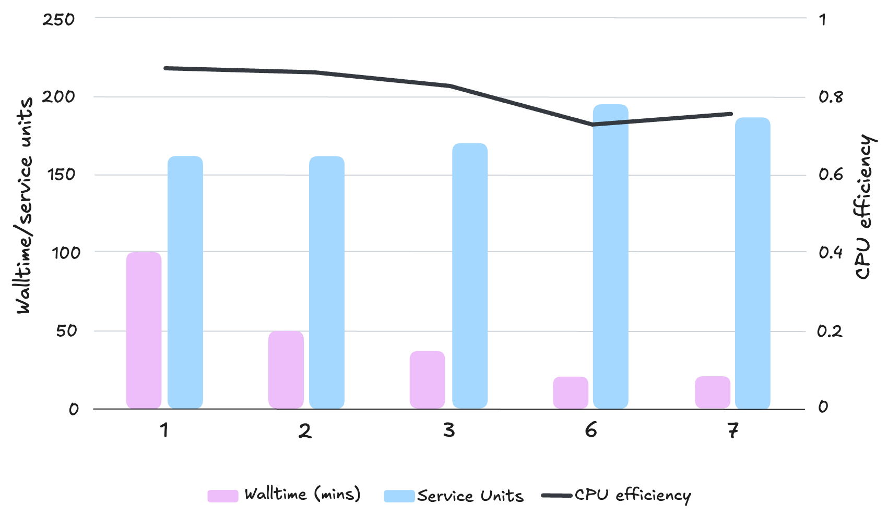
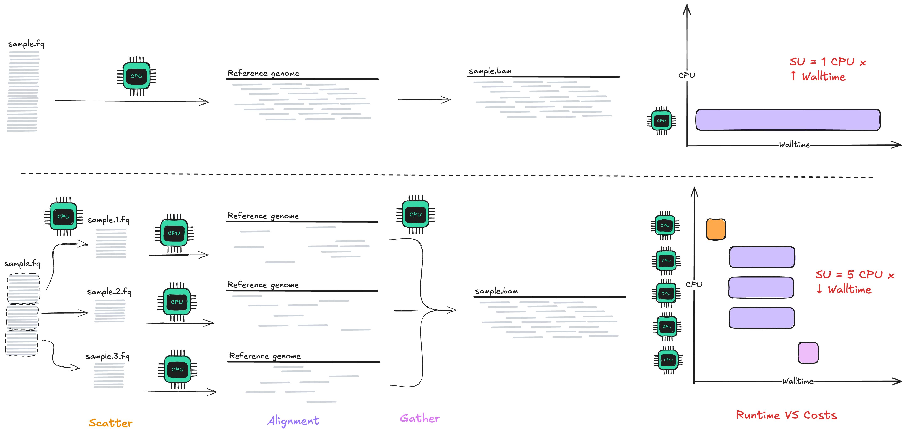

Parallelisation
Learning objectives
- Explain the limitations of parallelisation and cases where splitting data is not biologically correct
- Differentiate between multi-threading and scatter-gather parallelisation methods
- Implement parallelisation approaches in Nextflow and evaluate their impact on resource usage
In Lesson 1.4, strategies to speed up your workflow by utilising more resources were introduced. As your data size or sample throughput grows, so too does the importance of efficient processing. In this lesson we will explore how Nextflow supports different forms of parallelisation to help you scale your workflows by adding multi-threading and scatter-gather parallelism to our custom workflow.
Recall that assigning more cores than your tool can efficiently utilise or splitting your data up into too many chunks can lead to diminishing returns, where CPU efficiency is decreased and service unit cost is increased for little to no walltime gain. Multi-threading and parallelisation requires benchmarking to find the right balance between walltime, CPU efficiency, and service unit consumption.
The figure below shows benchmarking results on real world data for alignment of human whole genome data using a scatter-gather method. As the number of nodes per sample increases (x-axis) the walltime decreases, until plateau by 6 nodes. This highlights the importance of benchmarking to avoid over-parallelisation.

2.5.1 Multi-threading bwa mem
In this section we will look at implementing another multi-threading example with bwa mem, used in the ALIGN process. These are the example benchmarking results from Part 1, with the CPU efficiency calculated for you with the formula cpu time / walltime / cpus:
| Cores | Walltime (s) | CPU time (s) | CPU efficiency |
|---|---|---|---|
| 2 | 0.744 | 1.381 | 93% |
| 4 | 0.456 | 1.537 | 84% |
| 6 | 0.355 | 1.618 | 76% |
| 8 | 0.291 | 1.628 | 70% |
CPU efficiency
Recall that CPU efficiency is a measure of how many cpus were actually used, in comparison to how many cpus were requested. A high CPU efficiency (100%) means that all of the CPUs were utilised, while a low efficiency suggests that too many were requested.
It is typical to see speed gains when additional resources are allocated to a tool that can make use of them, with some tools achieving a near-perfect efficiency of near 100% for many increases to core count. However, in reality very few multi-threading tools can sustain 1:1 gains at high core counts, so efficiency decreases, walltime plateaus, and service units creep up. As tempting as it may be to run BWA with 128 threads on Setonix, we promise you this is not a good idea!
Note that the above benchmarking results are for demonstration purposes only, and for real-world benchmarking, larger test data should be used, aiming for a walltime of at least 5 minutes to observe reliable performance changes at different threads.
From the example benchmarking results above, we need to consider the trade-offs between each run and what we would like to optimise for:
- Providing 2 cores has the slowest walltime but utilises the 2 CPUs most efficiently (93%)
- On the other hand, providing 8 cores provides ~40% speedup in walltime, but at the cost of reduced CPU efficiency
The most suitable choice for your workflow depends on your research priorities at the time: turnaround time or minimise compute cost? In general however, aiming for >80% CPU efficiency ensures we are not reserving resources in excess.
Poll
- How many cores would you choose to provide
ALIGNto ensure that it still uses the CPUs efficiently, but with a speedup in walltime? - Which
.configfile would you want to use? (nextflow.config- workflow-specific, system-agnostic;custom.config- workflow-specific, system-specific) - How much extra memory can you utilise if required? (Consider the effective RAM/CPUs proportion of the queue or partition)
Answers
- 4 CPUs has > 80% CPU efficiency
custom.configto ensure it is tuned for thenormalbwqueue- 4 CPUs with 16-18 GB memory
Answers
- 4 CPUs has > 80% CPU efficiency
custom.configto ensure it fits theworkpartition- 4 CPUs with 7-8 GB memory
Exercise: Reassigning resources for ALIGN
- In
config/custom.config, update theprocessscope:
process {
cpu = 1 // 'normalbw' queue = 128 GB / 28 CPU ~ 4.6
memory = 4.GB
withName: /FASTQC|JOINT_GENOTYPE/ {
cpus = 2
memory = 1.GB
time = 2.minutes
}
withName: ALIGN {
cpus = 4
memory = 16.GB
time = 2.minutes
}
withName: GENOTYPE {
cpus = 2
memory = 2.GB
time = 2.minutes
}
withName: /STATS|MULTIQC/ {
cpus = 1
memory = 2.GB
time = 2.minutes
}
}
process {
cpu = 1 // 'work' partition = 230 GB / 128 CPU ~ 1.8
memory = 2.GB
withName: /FASTQC|JOINT_GENOTYPE/ {
cpus = 2
memory = 1.GB
time = 2.minutes
}
withName: ALIGN {
cpus = 4
memory = 8.GB
time = 2.minutes
}
withName: GENOTYPE {
cpus = 2
memory = 2.GB
time = 2.minutes
}
withName: /STATS|MULTIQC/ {
cpus = 1
memory = 2.GB
time = 2.minutes
}
}
Note: our ALIGN process (modules/align.nf) has -t $task.cpus already defined, so you do not need to amend it.
- Save your file and run with:
This should not have re-run the ALIGN, or any other processes. This is because we still have our -resume flag in our run scripts. Nextflow did not detect any changes to our workflow so used the cached files from the previous run:
N E X T F L O W ~ version 24.10.0
Launching `main.nf` [mighty_carson] DSL2 - revision: e34a5e5f9d
[26/95a75a] FASTQC (fastqc on NA12877) | 1 of 1, cached: 1 ✔
[7d/99698f] ALIGN (1) | 1 of 1, cached: 1 ✔
[96/cdfe17] GENOTYPE (1) | 1 of 1, cached: 1 ✔
[8a/2b3191] JOINT_GENOTYPE (1) | 1 of 1, cached: 1 ✔
[88/dab55c] STATS (1) | 1 of 1, cached: 1 ✔
[34/65d4e2] MULTIQC | 1 of 1, cached: 1 ✔
As configuration generally does not trigger the re-run of processes, we need to run the workflow from the beginning in order to apply the updated resource configuration.
Exercise: Run from scratch!
- Remove the
-resumeflag from yourrun.shscript, save, and re-submit:
- Inspect your trace file and confirm that
ALIGNhas been allocated the cores and memory that you added incustom.config:
Output
| name | status | exit | realtime | cpus | %cpu | memory | %mem | rss |
|---|---|---|---|---|---|---|---|---|
| FASTQC (fastqc on NA12877) | COMPLETED | 0 | 4s | 2 | 100.2% | 1 GB | 0.2% | 241.5 MB |
| ALIGN (1) | COMPLETED | 0 | 1s | 4 | 197.8% | 16 GB | 0.0% | 6.3 MB |
| GENOTYPE (1) | COMPLETED | 0 | 41s | 2 | 137.3% | 2 GB | 1.1% | 1.3 GB |
| JOINT_GENOTYPE (1) | COMPLETED | 0 | 8s | 2 | 160.9% | 1 GB | 0.3% | 438.5 MB |
| STATS (1) | COMPLETED | 0 | 0ms | 1 | 61.9% | 2 GB | 0.0% | 3.1 MB |
| MULTIQC | COMPLETED | 0 | 3.7s | 1 | 88.9% | 2 GB | 0.1% | 92.6 MB |
| name | status | exit | realtime | cpus | %cpu | memory | %mem | rss |
|---|---|---|---|---|---|---|---|---|
| ALIGN (1) | COMPLETED | 0 | 0ms | 4 | 257.0% | 8 GB | 0.0% | 2 MB |
| FASTQC (fastqc on NA12877) | COMPLETED | 0 | 9s | 2 | 61.4% | 1 GB | 0.1% | 247.6 MB |
| GENOTYPE (1) | COMPLETED | 0 | 39s | 2 | 127.2% | 2 GB | 0.6% | 1.6 GB |
| JOINT_GENOTYPE (1) | COMPLETED | 0 | 9s | 2 | 176.0% | 1 GB | 0.2% | 447.7 MB |
| STATS (1) | COMPLETED | 0 | 1s | 1 | 70.1% | 2 GB | 0.0% | 2 MB |
| MULTIQC | COMPLETED | 0 | 9.3s | 1 | 38.7% | 2 GB | 0.0% | 85.7 MB |
Remember to read the tool documentation!
All software and bioinformatics tools are built differently. Some support multi-threading, some can only run things with a single thread. Overlooking these details may not be crucial when running on systems where you have autonomy and access to all resources (personal compute, cloud instances), however, these are important parts of configuring your workflow on HPC shared systems to set reasonable limits and requests.
2.5.1.1 Code checkpoint
Show complete code
process {
cpu = 1 // 'normalbw' queue = 128 GB / 28 CPU ~ 4.6
memory = 4.GB
withName: /FASTQC|JOINT_GENOTYPE/ {
cpus = 2
memory = 1.GB
time = 2.minutes
}
withName: ALIGN {
cpus = 4
memory = 16.GB
time = 2.minutes
}
withName: GENOTYPE {
cpus = 2
memory = 2.GB
time = 2.minutes
}
withName: /STATS|MULTIQC/ {
cpus = 1
memory = 2.GB
time = 2.minutes
}
}
// Name the reports according to when they were run
params.timestamp = new java.util.Date().format('yyyy-MM-dd_HH-mm-ss')
// Generate timeline-timestamp.html timeline report
timeline {
enabled = true
overwrite = false
file = "./runInfo/timeline-${params.timestamp}.html"
}
// Generate report-timestamp.html execution report
report {
enabled = true
overwrite = false
file = "./runInfo/report-${params.timestamp}.html"
}
trace {
enabled = true
overwrite = false
file = "./runInfo/trace-${params.timestamp}.txt"
fields = 'name,status,exit,realtime,cpus,%cpu,memory,%mem,rss'
}
process {
cpu = 1 // 'work' partition = 230 GB / 128 CPU ~ 1.8
memory = 2.GB
withName: /FASTQC|JOINT_GENOTYPE/ {
cpus = 2
memory = 1.GB
time = 2.minutes
}
withName: ALIGN {
cpus = 4
memory = 8.GB
time = 2.minutes
}
withName: GENOTYPE {
cpus = 2
memory = 2.GB
time = 2.minutes
}
withName: /STATS|MULTIQC/ {
cpus = 1
memory = 2.GB
time = 2.minutes
}
}
// Name the reports according to when they were run
params.timestamp = new java.util.Date().format('yyyy-MM-dd_HH-mm-ss')
// Generate timeline-timestamp.html timeline report
timeline {
enabled = true
overwrite = false
file = "./runInfo/timeline-${params.timestamp}.html"
}
// Generate report-timestamp.html execution report
report {
enabled = true
overwrite = false
file = "./runInfo/report-${params.timestamp}.html"
}
trace {
enabled = true
overwrite = false
file = "./runInfo/trace-${params.timestamp}.txt"
fields = 'name,status,exit,realtime,cpus,%cpu,memory,%mem,rss'
}
2.5.2 Faster alignment with scatter-gather

One of the core benefits of running bioinformatics workflows on HPC is access to increased processing power and hardware. For jobs that can be conducted independently of each other, if configured correctly, we can run many jobs simultaneously and reduce the overall walltime required to run the workflow. One strategy to implement this is by:
- Splitting the data into smaller sub-parts
- "Scattering" analysis of the parts across the compute cluster to be analysed separately
- "Gathering" the processed outputs back into a single combined file
Not everything can or should be split
Recall from Part 1 that we can't split everything - it should only be done if the particular processing step can be run on subsections of the data independently of each other. Scattering tasks does not make sense when results depend on comparing all data together, such as detecting structural variants across multiple chromosomes.
With scatter-gather parallelism, we can take "tall" jobs (long walltime) amenable to valid chunking - like sequence alignment - and mould it into many "small and short" jobs to take advantage of the "gap filling" tendency of the job scheduler.
2.5.2.1 Scatter: splitting our reads
In whole genome sequence analysis, alignment is typically the largest bottleneck. Given the independent nature of the sequence fragments, scatter-gather of this step is a widely used approach for speeding up processing time.
To do so, we will leverage Nextflow's built-in splitFastq operator.
Exercise: Adding .splitFastq to the workflow
- Copy the following lines, and paste in
main.nfafterFASTQC(reads)and beforeALIGN(reads, bwa_index):
// Split FASTQs for each sample
split_fqs = reads
.splitFastq(limit: 3, pe: true, file: true)
.view()
- The
readschannel is taken as input. It contains the[ sample_name, fastq_r1, fastq_r2 ] .splitFastqsplits each paired.fastqfile (pe: true) into three files (limit: 3)file: truestores each split.fastqfile in the work directory and avoids out-of-memory issues- We include
.view()to inspect the contents of thesplit_fqschannel we just created
Next, we need to update the inputs to ALIGN, so it takes the split .fastq files.
Exercise: Updating the ALIGN input
- In
main.nf, in theworkflowscope, replace the input argument toALIGNfromALIGN(reads, bwa_index)toALIGN(split_fqs, bwa_index).
Show change
Before:
// Run the fastqc step with the reads_in channel
FASTQC(reads)
// Split FASTQs for each sample
split_fqs = reads
.splitFastq(limit: 3, pe: true, file: true)
.view()
// Run the align step with the reads_in channel and the genome reference
ALIGN(reads, bwa_index)
// Run genotyping with aligned bam and genome reference
GENOTYPE(ALIGN.out.aligned_bam, ref)
After:
// Run the fastqc step with the reads_in channel
FASTQC(reads)
// Split FASTQs for each sample
split_fqs = reads
.splitFastq(limit: 3, pe: true, file: true)
.view()
// Run the align step with the reads_in channel and the genome reference
ALIGN(split_fqs, bwa_index)
// Run genotyping with aligned bam and genome reference
GENOTYPE(ALIGN.out.aligned_bam, ref)
- Save the file, and run:
Show output
N E X T F L O W ~ version 24.10.0
Launching `main.nf` [suspicious_wiles] DSL2 - revision: de5d65b946
[47/e84f4d] FASTQC (fastqc on NA12877) [100%] 1 of 1 ✔
[c5/6d69ea] ALIGN (3) [100%] 3 of 3 ✔
[a7/7a6424] GENOTYPE (2) [100%] 3 of 3 ✔
[47/e84f4d] FASTQC (fastqc on NA12877) [100%] 1 of 1 ✔
[c5/6d69ea] ALIGN (3) [100%] 3 of 3 ✔
[a7/7a6424] GENOTYPE (2) [100%] 3 of 3 ✔
[- ] JOINT_GENOTYPE -
[- ] STATS -
[- ] MULTIQC -
[NA12877, /scratch/pawsey1227/fjaya/nextflow-on-hpc-materials/part2/work/a0/569c8d068367a6f922be0841dce142/NA12877_chr20-22.R1.1.fq, /scratch/pawsey1227/fjaya/nextflow-on-hpc-materials/part2/work/9e/c4cab021b4ecfa15e1f9a059ffd8e7/NA12877_chr20-22.R2.1.fq]
[NA12877, /scratch/pawsey1227/fjaya/nextflow-on-hpc-materials/part2/work/a0/569c8d068367a6f922be0841dce142/NA12877_chr20-22.R1.2.fq, /scratch/pawsey1227/fjaya/nextflow-on-hpc-materials/part2/work/9e/c4cab021b4ecfa15e1f9a059ffd8e7/NA12877_chr20-22.R2.2.fq]
[NA12877, /scratch/pawsey1227/fjaya/nextflow-on-hpc-materials/part2/work/a0/569c8d068367a6f922be0841dce142/NA12877_chr20-22.R1.3.fq, /scratch/pawsey1227/fjaya/nextflow-on-hpc-materials/part2/work/9e/c4cab021b4ecfa15e1f9a059ffd8e7/NA12877_chr20-22.R2.3.fq]
ERROR ~ Error executing process > 'JOINT_GENOTYPE (1)'
Caused by:
Process `JOINT_GENOTYPE` input file name collision -- There are multiple input files for each of the following file names: NA12877.g.vcf.gz, NA12877.g.vcf.gz.tbi
Container:
/scratch/pawsey1227/fjaya/nextflow-on-hpc-materials/singularity/quay.io-biocontainers-gatk4-4.6.2.0--py310hdfd78af_1.img
Tip: you can replicate the issue by changing to the process work dir and entering the command `bash .command.run`
-- Check '.nextflow.log' file for details
Let's take a look at the stdout printed.
The output of reads.splitFastq() include three separate arrays that contain:
- The name of the sample
- The path to the R1
.fastqfile - The path to the R2
.fastqfile
Note that each .fastq file is now identified with a chunk number (e.g. .../NA12877_chr20-22.R2.1.fq) - we have successfully split the reads into three.
The following line indicates that the ALIGN and GENOTYPE processes now run three times, successfully:
Note
Three separate tasks were automatically generated and scheduled by Nextflow without any extra instructions from us. Because we have already configured ALIGN and GENOTYPE in our config files, all scattered tasks used those resource settings automatically.
Setting up your channels and using groovy operators can be a bit tricky at first, however, once these are set up correctly, Nextflow will take care of the scatter–gather orchestration for you. This makes it straightforward to parallelise work at scale with minimal additional code.
However, you should have received an error before JOINT_GENOTYPE was run:
Caused by:
Process `JOINT_GENOTYPE` input file name collision -- There are multiple input files for each of the following file names: NA12877.g.vcf.gz, NA12877.g.vcf.gz.tbi
Let's troubleshoot by inspecting the output of the GENOTYPE process
Advanced exercise: Troubleshoot GENOTYPE error
- Inspect the process outputs using
.view(). Copy and paste the following line afterGENOTYPE(ALIGN.out.aligned_bam, ref).
- Save the
main.nffile - Update your run script so it runs with
-resume, and re-run:
Output
# workdirs have been truncated with '...' for readability
[NA12877, .../NA12877_chr20-22.R1.1.fq, .../NA12877_chr20-22.R2.1.fq]
[NA12877, .../NA12877_chr20-22.R1.2.fq, .../NA12877_chr20-22.R2.2.fq]
[NA12877, .../NA12877_chr20-22.R1.3.fq, .../NA12877_chr20-22.R2.3.fq]
[NA12877, .../NA12877.g.vcf.gz, .../NA12877.g.vcf.gz.tbi]
[NA12877, .../NA12877.g.vcf.gz, .../NA12877.g.vcf.gz.tbi]
[NA12877, .../NA12877.g.vcf.gz, .../NA12877.g.vcf.gz.tbi]
ERROR ~ Error executing process > 'JOINT_GENOTYPE (1)'
Caused by:
Process `JOINT_GENOTYPE` input file name collision -- There are multiple input files for each of the following file names: NA12877.g.vcf.gz, NA12877.g.vcf.gz.tbi
Container:
/scratch/pawsey1227/fjaya/nextflow-on-hpc-materials/singularity/quay.io-biocontainers-gatk4-4.6.2.0--py310hdfd78af_1.img
Tip: view the complete command output by changing to the process work dir and entering the command `cat .command.out`
-- Check '.nextflow.log' file for details
- The first three lines are the outputs of our
.splitFastq()operation, this has not changed since the last time the workflow was run - The last three lines are the outputs emitted from the
GENOTYPEprocess. One output reflects the run for one of the chunks processed. However, all the output names are the same. This is the cause of the error.
We will resolve this by updating our channels to include the chunk id, and rename how the bam files are output, ensuring they are uniquely identified.
Exercise: Adding the chunk_id to the tuple
- Update the workflow script to include the
chunk_id. This will be used to identify the reads to avoid the file name collision error previously. Add.view()to see how thesplit_fqschannel and the output forALIGNhas changed.
// Split FASTQs for each sample
split_fqs = reads
.splitFastq(limit: 3, pe: true, file: true)
.map { sample, r1, r2 ->
def chunk_id = r1.toString().tokenize('.')[2]
return [ sample, r1, r2, chunk_id ]
}
.view()
// Run the align step with the reads_in channel and the genome reference
ALIGN(split_fqs, bwa_index)
ALIGN.out.view()
Since our input channel has changed, we need to update the input block of our ALIGN module to recognise the chunk_id. We also want to rename our output bam files to include the chunk id.
- Copy and paste the following, replacing your entire
module/align.nf
process ALIGN {
container "quay.io/biocontainers/mulled-v2-fe8faa35dbf6dc65a0f7f5d4ea12e31a79f73e40:1bd8542a8a0b42e0981337910954371d0230828e-0"
publishDir "${params.outdir}/alignment"
input:
tuple val(sample_id), path(reads_1), path(reads_2), val(chunk_id)
tuple val(ref_name), path(bwa_index)
output:
tuple val(sample_id), path("${sample_id}.${chunk_id}.bam"), path("${sample_id}.${chunk_id}.bam.bai"), emit: aligned_bam
script:
"""
bwa mem -t $task.cpus -R "@RG\\tID:${sample_id}\\tPL:ILLUMINA\\tPU:${sample_id}\\tSM:${sample_id}\\tLB:${sample_id}\\tCN:SEQ_CENTRE" ${bwa_index}/${ref_name} $reads_1 $reads_2 | samtools sort -O bam -o ${sample_id}.${chunk_id}.bam
samtools index ${sample_id}.${chunk_id}.bam
"""
}
- Save your
main.nfandmodule/align.nfand re-run:
Output
[3c/2aa92e] FASTQC (fastqc on NA12877) [100%] 1 of 1, cached: 1 ✔
[25/85c48b] ALIGN (1) [100%] 3 of 3, cached: 3 ✔
[3d/f1dc44] GENOTYPE (1) [100%] 1 of 1, failed: 1
[- ] JOINT_GENOTYPE -
[- ] STATS -
[- ] MULTIQC -
[NA12877, .../NA12877_chr20-22.R1.1.fq, .../NA12877_chr20-22.R2.1.fq, 1]
[NA12877, .../NA12877_chr20-22.R1.2.fq, .../NA12877_chr20-22.R2.2.fq, 2]
[NA12877, .../NA12877_chr20-22.R1.3.fq, .../NA12877_chr20-22.R2.3.fq, 3]
[NA12877, .../NA12877.3.bam, .../NA12877.3.bam.bai]
[NA12877, .../NA12877.1.bam, .../NA12877.1.bam.bai]
[NA12877, .../NA12877.2.bam, .../NA12877.2.bam.bai]
The pipeline will fail, however ALIGN now includes the chunk id in the bam and bam index names.
Question
Can you think of why the code will fail?
2.5.2.2 Code checkpoint
Show complete code
include { FASTQC } from './modules/fastqc'
include { ALIGN } from './modules/align'
include { GENOTYPE } from './modules/genotype'
include { JOINT_GENOTYPE } from './modules/joint_genotype'
include { STATS } from './modules/stats'
include { MULTIQC } from './modules/multiqc'
// Define the workflow
workflow {
// Define the fastqc input channel
reads = Channel.fromPath(params.samplesheet)
.splitCsv(header: true)
.map { row -> {
// def strandedness = row.strandedness ? row.strandedness : 'auto'
[ row.sample, file(row.fastq_1), file(row.fastq_2) ]
}}
bwa_index = Channel.fromPath(params.bwa_index)
.map { idx -> [ params.bwa_index_name, idx ] }
.first()
ref = Channel.of( [ file(params.ref_fasta), file(params.ref_fai), file(params.ref_dict) ] ).first()
// Run the fastqc step with the reads_in channel
FASTQC(reads)
// Split FASTQs for each sample
split_fqs = reads
.splitFastq(limit: 3, pe: true, file: true)
.map { sample, r1, r2 ->
def chunk_id = r1.toString().tokenize('.')[2]
return [ sample, r1, r2, chunk_id ]
}
.view()
// Run the align step with the reads_in channel and the genome reference
ALIGN(split_fqs, bwa_index)
ALIGN.out.view()
// Run genotyping with aligned bam and genome reference
GENOTYPE(ALIGN.out.aligned_bam, ref)
// Gather gvcfs and run joint genotyping
all_gvcfs = GENOTYPE.out.gvcf
.map { _sample_id, gvcf, gvcf_idx -> [ params.cohort_name, gvcf, gvcf_idx ] }
.groupTuple()
JOINT_GENOTYPE(all_gvcfs, ref)
// Get VCF stats
STATS(JOINT_GENOTYPE.out.vcf)
// Collect summary data for MultiQC
multiqc_in = FASTQC.out.qc_out
.mix(STATS.out.stats_out)
.collect()
/*
* Generate the analysis report with the
* outputs from fastqc and bcftools stats
*/
MULTIQC(multiqc_in)
}
process ALIGN {
container "quay.io/biocontainers/mulled-v2-fe8faa35dbf6dc65a0f7f5d4ea12e31a79f73e40:1bd8542a8a0b42e0981337910954371d0230828e-0"
publishDir "${params.outdir}/alignment"
input:
tuple val(sample_id), path(reads_1), path(reads_2), val(chunk_id)
tuple val(ref_name), path(bwa_index)
output:
tuple val(sample_id), path("${sample_id}.${chunk_id}.bam"), path("${sample_id}.${chunk_id}.bam.bai"), emit: aligned_bam
script:
"""
bwa mem -t $task.cpus -R "@RG\\tID:${sample_id}\\tPL:ILLUMINA\\tPU:${sample_id}\\tSM:${sample_id}\\tLB:${sample_id}\\tCN:SEQ_CENTRE" ${bwa_index}/${ref_name} $reads_1 $reads_2 | samtools sort -O bam -o ${sample_id}.${chunk_id}.bam
samtools index ${sample_id}.${chunk_id}.bam
"""
}
2.5.2.3 Gather: combining our scattered alignments
Now that we have sucessfully split our reads and uniquely identified the output bam files, we will implement a gather pattern to bring our alignments into a single file again. This is the source of the above expected error: the workflow logic expected one mapping file output per sample, but we have 3. Like we added a process for the splitting task, we also need to add a process for the gathering task.
Different patterns for different needs
There is no one-size-fits-all approach for scattering and gathering. How this is implemented in Nextflow will be highly dependent on your workflow structure, and input and output files. Nextflow patterns provides examples of commonly used patterns that support a range of different needs, such as splitting text and CSV files, to re-grouping and organising results for downstream processing.
Whole‑genome alignment is an excellent use case for scatter–gather as the alignment of each chunk can run independently, dramatically reducing walltime for this heavy step. Once alignment is complete, the BAM files are merged and the workflow proceeds as normal.
Where you choose to re‑gather your data will depend on where your bottlenecks are and at which points you need to process the dataset as a whole again.
Exercise: Adding MERGE_BAMS
- Import the
MERGE_BAMSmodule in yourmain.nffile.
include { FASTQC } from './modules/fastqc'
include { SPLIT_FASTQ } from './modules/split_fastq'
include { ALIGN } from './modules/align'
include { MERGE_BAMS } from './modules/merge_bams'
include { GENOTYPE } from './modules/genotype'
include { JOINT_GENOTYPE } from './modules/joint_genotype'
include { STATS } from './modules/stats'
include { MULTIQC } from './modules/multiqc'
- Insert the following lines in
main.nf, afterALIGN.out.view(). Update theGENOTYPEprocess so it takes in our merged bams.
gathered_bams = ALIGN.out.aligned_bam
.groupTuple()
MERGE_BAMS(gathered_bams)
// Run genotyping with aligned bam and genome reference
GENOTYPE(MERGE_BAMS.out.aligned_bam, ref)
Show changes
Before:
// Run the align step with the reads_in channel and the genome reference
ALIGN(split_fqs, bwa_index)
ALIGN.out.view()
// Run genotyping with aligned bam and genome reference
GENOTYPE(ALIGN.out.aligned_bam, ref)
After:
// Run the align step with the reads_in channel and the genome reference
ALIGN(split_fqs, bwa_index)
ALIGN.out.view()
gathered_bams = ALIGN.out.aligned_bam
.groupTuple()
MERGE_BAMS(gathered_bams)
// Run genotyping with aligned bam and genome reference
GENOTYPE(MERGE_BAMS.out.aligned_bam, ref)
- Re-run the pipeline:
Now, let's re-inspect that the merge worked as intended.
Exercise: Inspecting the MERGE_BAM task directory
- Locate the work directory for the
MERGE_BAMprocess using the trace file, if you have theworkdirfield, or use the nextflow log.
.
├── .command.begin
├── .command.err
├── .command.log
├── .command.out
├── .command.run
├── .command.sh
├── .command.trace
├── .exitcode
├── NA12877.1.bam -> /scratch/pawsey1227/fjaya/nextflow-on-hpc-materials/part2/work/fc/bebb980d3d81cba7dacb6d052faf08/NA12877.1.bam
├── NA12877.1.bam.bai -> /scratch/pawsey1227/fjaya/nextflow-on-hpc-materials/part2/work/fc/bebb980d3d81cba7dacb6d052faf08/NA12877.1.bam.bai
├── NA12877.2.bam -> /scratch/pawsey1227/fjaya/nextflow-on-hpc-materials/part2/work/ec/b16bfd4ccc0c627553eb0e55337b21/NA12877.2.bam
├── NA12877.2.bam.bai -> /scratch/pawsey1227/fjaya/nextflow-on-hpc-materials/part2/work/ec/b16bfd4ccc0c627553eb0e55337b21/NA12877.2.bam.bai
├── NA12877.3.bam -> /scratch/pawsey1227/fjaya/nextflow-on-hpc-materials/part2/work/c7/b93c40ec2e8c9eebe4cce19ac96ef7/NA12877.3.bam
├── NA12877.3.bam.bai -> /scratch/pawsey1227/fjaya/nextflow-on-hpc-materials/part2/work/c7/b93c40ec2e8c9eebe4cce19ac96ef7/NA12877.3.bam.bai
├── NA12877.bam
└── NA12877.bam.bai
- View the
.command.shfile. Have the expected files been merged?
#!/bin/bash -ue
samtools cat NA12877.3.bam NA12877.2.bam NA12877.1.bam | samtools sort -O bam -o NA12877.bam
samtools index NA12877.bam
We can now see that each of the 3 BAMs resulting from the scattered alignment was merged into a single BAM file for the sample, and the rest of the workflow progressed as normal.
To sum up this step, you successfully:
- Split the paired FASTQ reads into 3 chunks using
.splitFastq - Aligned each chunk in parallel
- Merged the aligned chunks into a single BAM (
MERGE_BAMS()) - Ran the remainder of the workflow as usual
This change optimises performance for large datasets by leveraging parallel processing.
What about multiple samples?
You have now used scatter-gather physical data chunking to align a single sample "embarassingly parallel". As processes are run independently of each other this does not always need to apply to single sample that is split. Running multiple samples is also a form of multi-processing and comes shipped with Nextflow's dataflow model. Once your pipeline is configured to run well with a single sample, queue channels make adding additional samples relatively easy.
We will revisit this in the next section.
2.5.2.4 Code checkpoint
Show code
include { FASTQC } from './modules/fastqc'
include { ALIGN } from './modules/align'
include { MERGE_BAMS } from './modules/merge_bams'
include { GENOTYPE } from './modules/genotype'
include { JOINT_GENOTYPE } from './modules/joint_genotype'
include { STATS } from './modules/stats'
include { MULTIQC } from './modules/multiqc'
// Define the workflow
workflow {
// Define the fastqc input channel
reads = Channel.fromPath(params.samplesheet)
.splitCsv(header: true)
.map { row -> {
// def strandedness = row.strandedness ? row.strandedness : 'auto'
[ row.sample, file(row.fastq_1), file(row.fastq_2) ]
}}
bwa_index = Channel.fromPath(params.bwa_index)
.map { idx -> [ params.bwa_index_name, idx ] }
.first()
ref = Channel.of( [ file(params.ref_fasta), file(params.ref_fai), file(params.ref_dict) ] ).first()
// Run the fastqc step with the reads_in channel
FASTQC(reads)
// Split FASTQs for each sample
split_fqs = reads
.splitFastq(limit: 3, pe: true, file: true)
.map { sample, r1, r2 ->
def chunk_id = r1.toString().tokenize('.')[2]
return [ sample, r1, r2, chunk_id ]
}
.view()
// Run the align step with the reads_in channel and the genome reference
ALIGN(split_fqs, bwa_index)
ALIGN.out.view()
gathered_bams = ALIGN.out.aligned_bam
.groupTuple()
MERGE_BAMS(gathered_bams)
// Run genotyping with aligned bam and genome reference
GENOTYPE(MERGE_BAMS.out.aligned_bam, ref)
// Gather gvcfs and run joint genotyping
all_gvcfs = GENOTYPE.out.gvcf
.map { _sample_id, gvcf, gvcf_idx -> [ params.cohort_name, gvcf, gvcf_idx ] }
.groupTuple()
JOINT_GENOTYPE(all_gvcfs, ref)
// Get VCF stats
STATS(JOINT_GENOTYPE.out.vcf)
// Collect summary data for MultiQC
multiqc_in = FASTQC.out.qc_out
.mix(STATS.out.stats_out)
.collect()
/*
* Generate the analysis report with the
* outputs from fastqc and bcftools stats
*/
MULTIQC(multiqc_in)
}
2.5.3 A note on dynamic resourcing
Since our data is small and similar-sized, we can apply the same resource configurations within the same process and it will still run successfully. However, it is common that we need to run the same process with input data of widely varying sizes. For example, if we were analysing tumour-normal matched genome sequences and the tumour samples were sequenced to double the depth of the normal samples, we may need to apply double the walltime and increased memory for some tasks.
One option may be to configure the resource usage to suit the largest workflow input (e.g. highest coverage sample). This will ensure all processes run sucessfully at the cost of underutilising the resources you have requested for the smaller inputs:
- If extra walltime than needed is requested, this may cause jobs to queue for longer, particularly if they also request larger quantities of cores and memory.
- If additional cores or memory are involved, the smaller inputs that do not need this resource boost will waste resources that could be allocated to other jobs, and cause the workflow to be charged more service units than necessary.
The alternative would be to take a dynamic approach when you need to process a number of inputs that require different resources.
If a job fails, you can tell Nextflow to automatically re-run it with additional resources. For example:
| Directive | Closure Example | Attempt 1 (Initial Run) | Attempt 2 (First Retry) |
|---|---|---|---|
memory |
{ 2.GB * task.attempt } |
2 GB | 4 GB |
time |
{ 1.hour * task.attempt } |
1 hour | 2 hours |
Another approach is to dynamically assign a resource based on properties of the input data. For example, by the size of the file:
For more information, see Nextflow's training on:
The same resource optimisation and configuration concepts that we have covered in this workshop continue to apply here: perform benchmarking with your data on the target HPC, monitor resource usage, and configure optimal resources to best suit the underlying hardware of the most suited queue/partition. As always, note that the development time for this optimsiation will be increased, however the time spent is particularly worthwhile if developing and running high-throughput workflows, for example cancer population studies where very high sequencing depth, 2 or more samples per patient, and large patient cohorts, are often involved.
2.5.4 Summary
Recall that it is not always biologically valid to parallelise everything, and embarassingly parallel tasks need to be benchmarked to find the sweet spot where speedup has not introduced a large increase in sevice unit cost due to declining CPU efficiency.
Once you have your workflow running on HPC, reviewing the custom trace and resource monitoring files can help identify long-running or inefficent processes that can benefit from optimisation. Explore whether these tasks can benefit from multi-threading or scatter-gather parallelism. Always use parallel by sample in your Nextflow workflows (never loops!) and only analyse all samples in one job when the nature of the task is to combine/co-analyse all data at once.